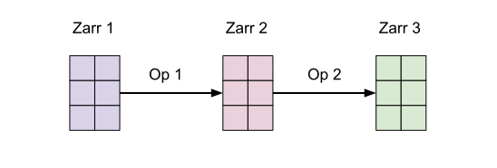
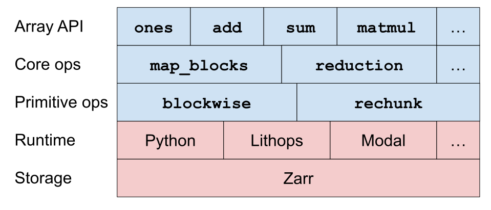
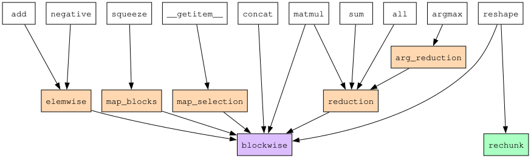
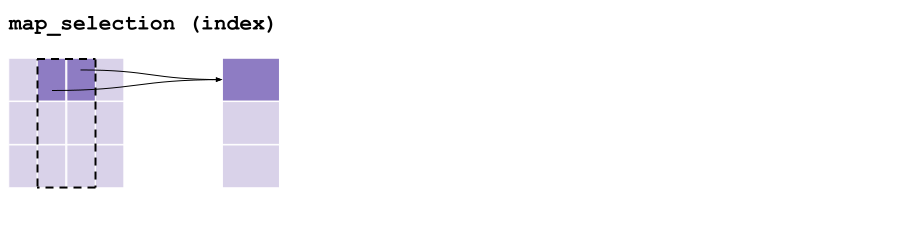
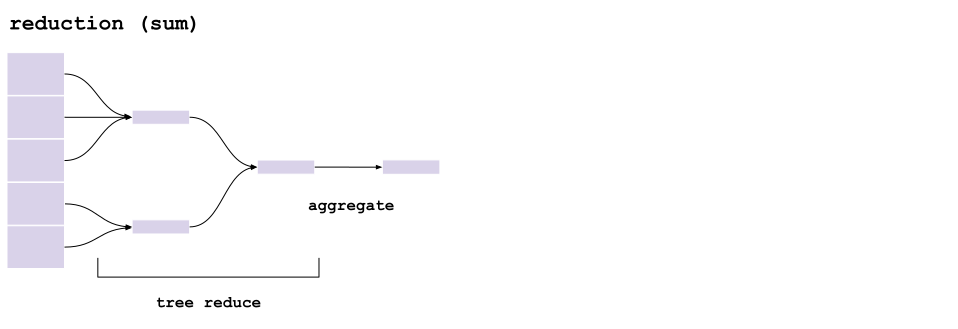
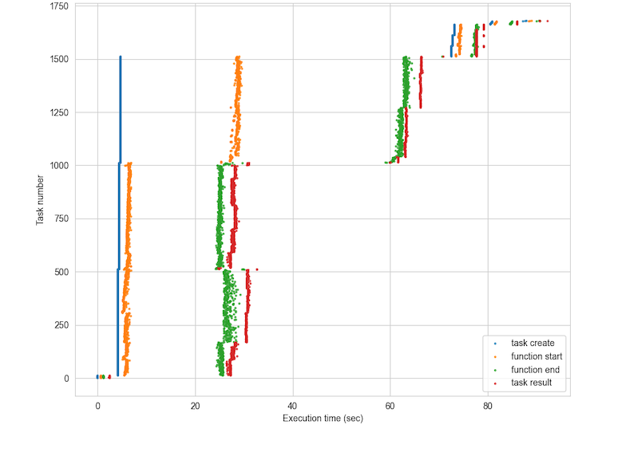

Cubed: an introduction#
Tom White, August 2025
Idea#
Use Zarr as the underlying intermediate persistent storage between array operations.

Tasks operate on Zarr chunks.
Tasks are embarrassingly parallel, and their runtime memory can be tightly controlled.
Demo#
Cubed implements the Python Array API standard
import cubed.array_api as xp
a = xp.asarray([[1, 2, 3], [4, 5, 6], [7, 8, 9]], chunks=(2, 2))
Notice that we specify chunks, just like in Dask Array.
b = xp.asarray([[1, 1, 1], [1, 1, 1], [1, 1, 1]], chunks=(2, 2))
c = xp.add(a, b)
Cubed uses lazy evaluation, so nothing has been computed yet.
c.compute()
array([[ 2, 3, 4],
[ 5, 6, 7],
[ 8, 9, 10]])
Primitives#
Blockwise: applies a function to multiple blocks from multiple inputs
Rechunk: changes chunking, without changing shape/dtype
Dask introduced both of these operations.
Almost all array operations can be implemented using these two primitives!
Design#
Cubed is composed of five layers: from the storage layer at the bottom, to the Array API layer at the top:

Core and Primitive Operations#

Example: map_selection#

Each block in the output array is read directly from one or more blocks from the input.
Can cross block boundaries.
Example: reduction#

Implemented using multiple rounds of a tree reduce operation followed by a final aggregation.
Computation plan#
Cubed creates a computation plan, which is a directed acyclic graph (DAG).
c = xp.add(a, b)
c.visualize()
Unlike a Dask graph which is at the task level, a Cubed graph is at the Zarr array level.
Optimization#
Cubed will automatically optimize the graph before computing it. For example by fusing blockwise (map) operations:


Optimization: an advanced example#
In early 2024 we implemented more optimizations to give a 4.8x performance improvement on the “Quadratic Means” climate workload running on Lithops with AWS Lambda, with a 1.5 TB workload completing in around 100 seconds

More details in Optimizing Cubed
Quadratic Means timeline#

Memory#
Cubed models the memory used by every operation, and calculates the projected_mem for a task - an upper bound.

If projected memory is more than what user specifies is allowed then an exception is raised during planning
import cubed
spec = cubed.Spec(work_dir="tmp", allowed_mem=100) # not enough memory!
a = xp.asarray([[1, 2, 3], [4, 5, 6], [7, 8, 9]], chunks=(2, 2), spec=spec)
b = xp.asarray([[1, 1, 1], [1, 1, 1], [1, 1, 1]], chunks=(2, 2), spec=spec)
try:
c = xp.add(a, b)
except ValueError as e:
print(e)
Peak memory#
Cubed measures the peak amount of memory actually used during runtime.
Used to checked utilization, and improve the modelling.
array_name op_name num_tasks peak_mem_delta_mb_max projected_mem_mb utilization
0 array-003 rechunk 1 103.727104 0.000064 NaN
1 array-004 blockwise 4 654.286848 800.000008 0.817859
2 array-007 rechunk 1 103.645184 0.000064 NaN
3 array-008 blockwise 4 654.364672 800.000008 0.817956
4 array-009 blockwise 4 796.954624 1200.000000 0.664129
Runtimes#
Local machine
Start here to process hundreds of GB on your laptop using all available cores
Serverless
Lithops: multi-cloud serverless computing framework
Slightly more work to get started since you have to build a runtime environment first
Tested on AWS Lambda and Google Cloud Functions with ~1000 workers
Modal: a commercial serverless platform
Very easy to set up since it builds the runtime automatically
Tested with ~300 workers
Coiled Functions
Cluster/HPC
Ray
Apache Beam (Google Cloud Dataflow)
Globus Compute
Apache Spark
Scalability and robustness#
Serverless scales out
AWS Lambda supports 1000 concurrent instances by default
PyWren paper: https://shivaram.org/publications/pywren-socc17.pdf
Retries
Each task is tried three times before failing
Stragglers
A backup task will be launched if a task is taking significantly longer than average
Xarray integration#
Xarray can use Cubed as its computation engine instead of Dask
Just install the cubed-xarray integration package
Cubed can use Flox for
groupbyoperationsExamples at https://flox.readthedocs.io/en/latest/user-stories/climatology-hourly-cubed.html
Try out Cubed!#
Try it out on your use case
Get started at https://cubed-dev.github.io/cubed/
Some examples from the Pangeo community:
https://github.com/pangeo-data/distributed-array-examples